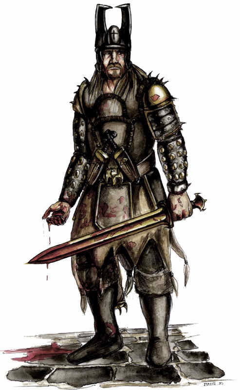

Forums galactiques > Assemblée Galactique : diplomatie officielle > HHISTOIRE DE PERSONNAGES
Pages : 1
| Béllerophon Respect diplomatique : 10  04/07 ETU 12:39 | Score : 6 Détails Ce topic est destiné a l'évolution de vos rp.( Je tiens a préciser que mon histoire débute à partir de l'histoire réelle de Béllérophon).
Fils de Glaucos et petit-fils de Sisyphe, Bellérophon dans sa jeunesse tua le tyran de Corinthe, Belléros. Banni de la cité pour ce crime, il s'exila chez Proétos, roi de Tirynthe, qui le purifia de son meurtre. Mais Sthénébée, l'épouse de Proétos, s'éprit du héros, qui la repoussa avec dédain. Dépitée, le reine l'accusa de tentative de viol : le roi la crut ; ne voulant toutefois pas tuer son hôte de sa main en raison des lois sacrées de l'hospitalité, il préféra charger son beau-frère Iobatès, roi de Lycie, de cette besogne, et il lui envoya Bellérophon avec l'ordre de le tuer. Or, Iobatès, tout comme Proétos et pour les mêmes motifs, n'osa pas lever la main sur le héros ; il lui demanda un certain nombre de services tous plus dangereux les uns que les autres. Bellérophon s'acquitta de tous avec zèle. Il réussit à dompter le cheval Pégase, grâce à des brides magiques offertes par Athéna. Il tua la Chimère. Il vainquit le peuple sauvage des Solymes et leurs alliées, les Amazones. Enfin, il mit un terme, par un massacre général, aux agissements d'une bande de pirates qui infestaient les côtes de Carie. Nullement reconnaissant de ces victoires, Iobatès monta une embuscade contre le héros. Or, les Lyciens furent tous tués jusqu'au dernier. Comprenant enfin que Bellérophon était protégé par les Dieux et sans doute d'origine divine, Iobatès fit amende honorable, lui accorda la main de sa fille Philonoé, et, à sa mort, lui légua le trône de Lycie. Mais le héros, grisé par ses exploits, ne sut pas s'arrêter dans les limites décentes que les Dieux impartissent aux humains. Monté sur le cheval Pégase, il voulut gagner l'Olympe et devenir immortel. Foudroyé par Zeus et désarçonné, il retomba sur Terre, et se tua ; selon une autre version, il ne mourut pas, mais il erra par le monde, boiteux, solitaire et aveugle. C'est ainsi que mon histoire débutera ... | ||
| Maximus Respect diplomatique : -3  04/07 ETU 20:31 | Score : 6 Détails Maximus était autrefois un géneral romain. Il n'était pas ordinaire;il allait se battre avec ses troupes. A chaque fois qu'il était présent dans une bataille, il l'emportait toujours. C'était un brave guerrier qui se battait pour la protection de son pays : l'Empire romain. Lorsqu'un jour ou le noble maximus eût été appelé par son empereur. Lorsqu'ils se retrouvèrent seul, L'empereur débuta la conversation :
-"Apparement tu es un des meilleur guerriers de L'Empire. - Oui,empereur. - tu te bas dans la meilleur légion. -Oui, empereur. Pourquoi cette question votre excellence ? - Les troyens ont été attaqués par les Grecs a Troie. Presque tous les guerriers de Grèce sont sur leur côtes. - Qu'attendez vous de moi genéral ? - Je veux que vous alliez vous et votre légion aider les troyens à repousser les Grecs. Ne savez vous pas que ce sont nos ennemis jurés ? - Oui, j'en suis sûr. - Bien. Achille est un soldat puissant, je veux que vous alliez le défier. - Mais empereur ! Achille est le meilleur guerrier de Grèce ! - As tu peur Géneral ? - Certes. C'est normal. Vous m'envoyez au royaume d'Hadès. - Je suis ton empereur et te l'ordonne !! - D'accord empereur. Navré de vous avoir décu." Maximus partit pour Troie. Une fois arrivé, il rencontra Hector, roi de la cité de Troie, fils de Priam. Hector lui expliqua que Agamemnon, Roi des provinces de Grèce voulait a tout prix cette ville. Il avait profité d'attaquer la ville et reprendre la femme de son frère. Maximus défenda la ville de Troie jusqu'a son dernier souffle mais ne put échapper au stratagème du Cheval de Troie. Après la mort d'Hector, il s'inquiéta pour la ville. Sachant qu'il detestait plus que tout au monde son empereur, il décida d'aller offrir ses services Agamemnon. Il se retrouvait donc du côté du plus fort : Achille, guerrier invincible, et Ulysse, ruse indomptable. Lors de la prise de Troie, il comprit alors que le côté le plus fort ne gagnais jamais. Bien que la ville ait été prise, les morts du côté grecs etaient nombreux : Agamemnon, Achille, Ajax, Patrocle. Il ne restait plus qu'Ulysse. Ulysse, lors des funérailles d'Achille, murmura - " les hommes grandissent et tombent comme les feuilles d'Automne, laisse les dire que tu as vécu a l'époque de géants...." Maximus partit avec Ulysse en direcion d'Ithaque ... | ||
| Maximus Respect diplomatique : -3 05/07 ETU 13:54 | Score : 0 Détails
(((Petite parenthèse, Je travaille sur ce rp en collaboration avec Argomis, il est donc en droit de continuer le rp comprenant l'entrée de son personnage. C'est un rp comprenant l'histoire simultanée de deux personnages. Merci de votre compréhension))) |
Pages : 1
Forums galactiques > Assemblée Galactique : diplomatie officielle > HHISTOIRE DE PERSONNAGES